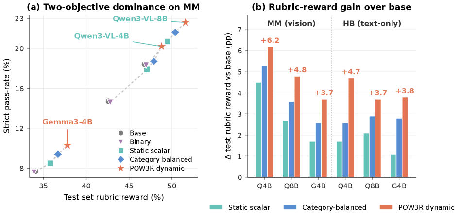
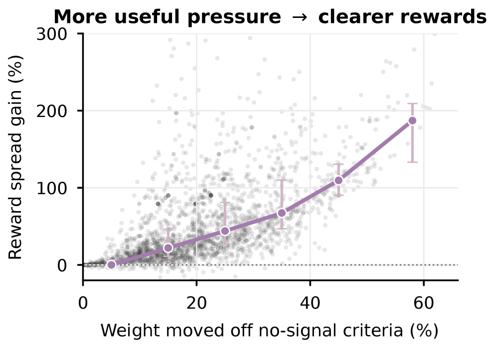

![Figure 1 : Rubric-pressure diagnostic. We track each criterion’s training pressure 2 2 2 We define criterion j j ’s training pressure as its within-category reward-weight share: w j / W κ j ( q ) w_{j}/W_{\kappa_{j}}(q) under the static reward, w ~ j ( t ) / W ~ κ j ( t ) ( q ) \tilde{w}_{j}^{(t)}/\tilde{W}_{\kappa_{j}}^{(t)}(q) under POW3R ( Eqs. ˜ 3 and 8 ). across criterion signal states. A criterion is dead when no rollout passes it ( p j = 0 p_{j}{=}0 ), saturated when every rollout passes it ( p j = 1 p_{j}{=}1 ), and mixed when verdicts differ across the rollout group; dead and saturated criteria have v j = 0 v_{j}{=}0 and give no group-relative advantage signal. (a) Criteria grouped by setting and absolute static weight/point tier (Low: | w j | ∈ { 1 , 2 , 3 } |w_{j}|\!\in\!\{1,2,3\} ; Mid: | w j | = 4 |w_{j}|\!=\!4 ; High: | w j | ≥ 5 |w_{j}|\!\geq\!5 ); high-weight criteria still carry substantial dead and saturated mass, so human importance is not the same as current learnability. (b) Within-category pressure before and after policy-aware reweighting, averaged over the two base policies per setting; pressure on zero-signal criteria drops by 8 8 – 12 12 pp. (c) Prompt-level reward spread (rollout std ( R ) \mathrm{std}(R) before GRPO standardization), static (gray) vs policy-aware (colored). Mean spread widens by 25 25 – 37 % 37\% , so fewer groups collapse to the tied std ( R ) = 0 \mathrm{std}(R){=}0 regime where every advantage is zero. MM/HB denote our multimodal dataset and HealthBench.](figures/1154/fig_001.png)
POW3R introduces a policy-aware rubric reward framework that dynamically reweights criteria based on their current contrastiveness, significantly improving training efficiency and final performance in multi-criteria RLVR.
本文提出POW3R框架，通过动态重加权评分标准，解决了静态聚合中训练压力浪费在饱和或无效标准上的问题。实验表明，POW3R在30项比较中赢得24项，并将训练步数减少2.5-4倍。
Deep Note — pow3r
Key Takeaways - Static rubric reward aggregation conflates human-assigned importance with current optimization signal, leading to wasted training pressure on saturated or dead criteria. - POW3R dynamically reweights rubric criteria based on rollout-level contrastiveness, preserving human weights and category balance while focusing training on informative criteria. - POW3R improves mean rubric reward and strict completion over vanilla GRPO, winning 24 of 30 base-policy/metric comparisons and reaching the same plateau in 2.5-4x fewer steps. - The rubric-pressure diagnostic reveals that 45-51% of within-category training pressure is routed to criteria that cannot move the policy under static aggregation.
0) Metadata
- Title: Not Every Rubric Teaches Equally: Policy-Aware Rubric Rewards for RLVR
- Alias: pow3r
- Authors: Utkarsh Tyagi, Xingang Guo, MohammadHossein Rezaei, Daniel George, Anas Mahmoud, Jackson Lee, Bing Liu, Yunzhong He
- arXiv ID: 2605.20164
- Published:
- Links:
- Abs: https://arxiv.org/abs/2605.20164
- HTML: https://arxiv.org/html/2605.20164v1
- PDF: https://arxiv.org/pdf/2605.20164
- Tags: reinforcement-learning, rubric-rewards, grpo, policy-aware, multi-criteria
- Domains: ai_safety, system_safety
- Rating: 5/5 (base 1 + quality 2 + observation 2)
1) Why-read
POW3R introduces a policy-aware rubric reward framework that dynamically reweights criteria based on their current contrastiveness, significantly improving training efficiency and final performance in multi-criteria RLVR.
2) CRGP
C — Context
Reinforcement learning with verifiable rewards (RLVR) using GRPO has become effective for post-training when correctness is automatically checkable. However, many important model behaviors require satisfying multiple qualitative criteria, addressed by rubric-based rewards that aggregate scores from LLM judges. Standard static weighted sums assume human-assigned weights reflect both final importance and current learnability, which breaks down in practice.
R — Related work
- Rubric-based rewards extend RL post-training beyond deterministic verifiers by decomposing quality into prompt-specific criteria scored by an LLM judge.
- Multi-reward RL treats alignment as multi-objective optimization, complementing scalar RLHF/RLAIF recipes.
- Dynamic rubric reweighting has been explored via curriculum learning or pairwise comparisons, but not with policy-aware contrastiveness from rollout variance.
G — Gap
Existing rubric-based rewards use static weighted sums that conflate a criterion's human-assigned importance with its current usefulness as an optimization signal. This leads to training pressure being wasted on criteria that are already saturated or unreachable, while criteria that distinguish rollouts may receive insufficient weight. No prior work dynamically reweights rubric criteria based on the current policy's rollout contrastiveness while preserving human weights and category balance.
P — Proposal
POW3R is a policy-aware rubric reward framework that measures each criterion's rollout contrastiveness from the smoothed standard deviation of judge verdicts, blends and clips this into a bounded factor, and renormalizes within each rubric category to preserve human weight priors. It adapts criterion-level reward weights during training to emphasize criteria that currently separate the policy's outputs, making the GRPO reward more informative without changing the underlying evaluation target.
---
4) Experiments
Main results
Across three base policies (Qwen3-VL-4B-Instruct, Gemma 3 12B-IT, and another) on two datasets (multimodal dataset MM and HealthBench English), POW3R wins 24 of 30 base-policy/metric comparisons, improving both mean rubric reward and strict completion over vanilla GRPO with rubric rewards. It reaches the same plateau in 2.5-4x fewer training steps.
Ablation
The rubric-pressure diagnostic shows that under static aggregation, 45-51% of within-category training pressure is routed to criteria that cannot move the policy (dead or saturated). POW3R reduces pressure on zero-signal criteria by 8-12 percentage points and widens pre-standardization rollout reward spread by 25-37%.
Limitations
['POW3R relies on LLM judges for rubric scoring, which may introduce noise or bias that affects contrastiveness estimates.', 'The framework assumes rubric criteria are independent and additive, which may not hold for all tasks.', 'Experiments are limited to two datasets and three base policies; generalizability to other domains or larger models is not fully explored.']
5) Why it matters
- Directly addresses the inefficiency of static reward aggregation in multi-criteria RL, a common bottleneck in aligning LLMs with complex human preferences.
- Provides a principled method to dynamically focus training on informative criteria without altering the final evaluation target, improving sample efficiency.
- The rubric-pressure diagnostic offers a general tool for analyzing reward signal quality in rubric-based RL, applicable to other multi-objective settings.
6) Next steps
- [ ] Apply POW3R to other domains such as long-form generation, code synthesis, or multi-turn dialogue where rubric criteria are diverse.
- [ ] Investigate the impact of LLM judge quality on POW3R's contrastiveness estimation and explore robust aggregation methods.
- [ ] Extend the framework to handle correlated or hierarchical rubric criteria beyond simple additive structure.
7) Scoring
5/5 = base 1 + quality 2 + observation 2
并非每条评分标准都同样有效：面向策略感知的评分奖励用于RLVR
主要结论 - 静态评分奖励聚合将人为分配的重要性与当前优化信号混为一谈，导致训练压力浪费在饱和或无效标准上。 - POW3R基于rollout级别的对比性动态重加权评分标准，保留人为权重和类别平衡，同时聚焦于信息量大的标准。 - POW3R在平均评分奖励和严格完成率上优于原始GRPO，在30项基策略/指标比较中赢得24项，并以2.5-4倍更少的步数达到相同平台期。 - 评分压力诊断显示，在静态聚合下，45-51%的类别内训练压力被导向无法推动策略的标准。
1) 阅读理由
POW3R提出一种策略感知的评分奖励框架，根据当前对比性动态重加权标准，显著提升多标准RLVR的训练效率和最终性能。
2) CRGP（背景 / 相关工作 / 差距 / 方案）
上下文：基于可验证奖励的强化学习（RLVR）结合GRPO在自动可检查正确性的后训练中效果显著，但许多重要行为需满足多个定性标准，这通过基于评分的奖励（由LLM裁判评分）来处理。标准静态加权和假设人为权重同时反映最终重要性和当前可学习性，但在实践中失效。相关工作：基于评分的奖励通过将质量分解为特定于提示的标准并由LLM裁判评分，将RL后训练扩展到确定性验证器之外；多奖励RL将对齐视为多目标优化；动态评分重加权已有课程学习或成对比较的探索，但未使用基于rollout方差的策略感知对比性。差距：现有基于评分的奖励使用静态加权和，混淆了标准的人为重要性与当前优化信号的有用性，导致训练压力浪费在已饱和或不可达的标准上，而区分rollout的标准可能权重不足。尚无工作基于当前策略的rollout对比性动态重加权评分标准，同时保留人为权重和类别平衡。提案：POW3R是一种策略感知的评分奖励框架，通过裁判判决的平滑标准差衡量每个标准的rollout对比性，混合并裁剪为有界因子，并在每个评分类别内重新归一化以保留人为权重先验。它在训练期间自适应调整标准级奖励权重，以强调当前区分策略输出的标准，使GRPO奖励更具信息性而不改变底层评估目标。
3) 实验
在三种基策略（Qwen3-VL-4B-Instruct、Gemma 3 12B-IT及另一种）和两个数据集（多模态数据集MM和HealthBench英文版）上，POW3R在30项基策略/指标比较中赢得24项，在平均评分奖励和严格完成率上均优于使用评分奖励的原始GRPO。它以2.5-4倍更少的训练步数达到相同平台期。
消融实验
评分压力诊断显示，在静态聚合下，45-51%的类别内训练压力被导向无法推动策略的标准（死亡或饱和）。POW3R将零信号标准的压力降低8-12个百分点，并将预标准化rollout奖励分布扩大25-37%。
局限性
['POW3R依赖LLM裁判进行评分，可能引入噪声或偏差，影响对比性估计。', '该框架假设评分标准独立且可加，这可能不适用于所有任务。', '实验仅限于两个数据集和三种基策略，未充分探索其他领域或更大模型的泛化性。']
4) 重要性
- 直接解决了多标准RL中静态奖励聚合的低效问题，这是对齐LLM与复杂人类偏好的常见瓶颈。
- 提供了一种原则性方法，在不改变最终评估目标的情况下动态聚焦于信息量大的标准，提高样本效率。
- 评分压力诊断提供了一种分析基于评分的RL中奖励信号质量的通用工具，适用于其他多目标设置。
5) 下一步
- [ ] 将POW3R应用于其他领域，如长文本生成、代码合成或多轮对话，其中评分标准多样。
- [ ] 研究LLM裁判质量对POW3R对比性估计的影响，并探索鲁棒的聚合方法。
- [ ] 扩展框架以处理相关或层次化的评分标准，超越简单的加性结构。


![Figure 5 : Per-category validation reward trajectories (Qwen3-VL-4B, MM). POW3R leads on every rubric category throughout training, with the gap opening at the first checkpoint. The largest absolute gains appear on Content, Instruction Following, Truthfulness, Visual Perception, and Visual Reasoning; on Writing Style POW3R still stays above the static baselines, but the three curves stay within roughly a point of each other because most Writing Style criteria are already passed by the base policy and offer little contrastive signal for POW3R to act on.](figures/1154/fig_005.png)